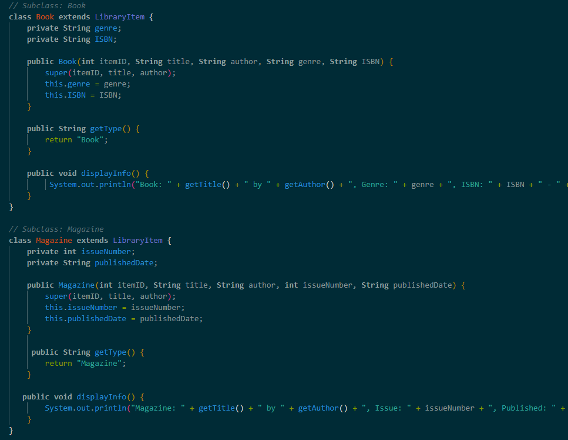
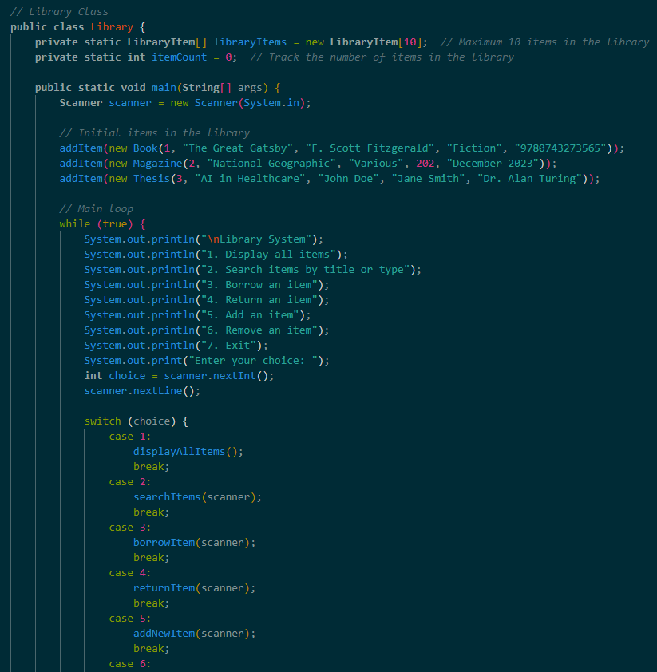
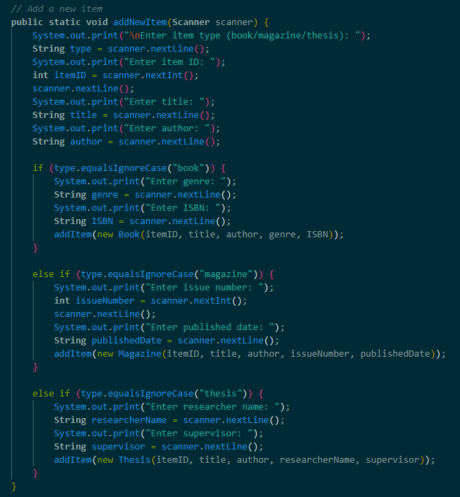

[ uniten academic project — object-oriented programming ]
books, magazines, theses — one system that borrows, returns, and fines automatically.
libraries manage multiple resource types — books, magazines, theses — each with different properties but shared behaviours like borrowing, returning, and availability tracking. managing this manually or with separate systems creates inconsistency.
a console-based java system with an abstract class hierarchy (LibraryItem → Book, Magazine, Thesis), a searchable catalogue, borrow/return workflows, automatic fine calculation at rm 0.50/day with a 7-day return window, and a pre-seeded library with real items ready to demo all flows immediately.
used an abstract parent class (LibraryItem) so all resource types share borrow/return logic — adding a new type only requires extending the class, not rewriting existing logic. pre-seeded 3 items (The Great Gatsby, National Geographic issue 202, AI in Healthcare thesis) so every workflow can be demonstrated without setup.
345 lines of java in a single clean file. demonstrates all four oop principles through a realistic domain — the kind of system design that scales to real library software.
345
lines of Java in a single file
RM 0.50
per day fine with a 7 day return window
3
item types managed under one abstract class
 main menu
main menu
borrow item
return item
search catalogue